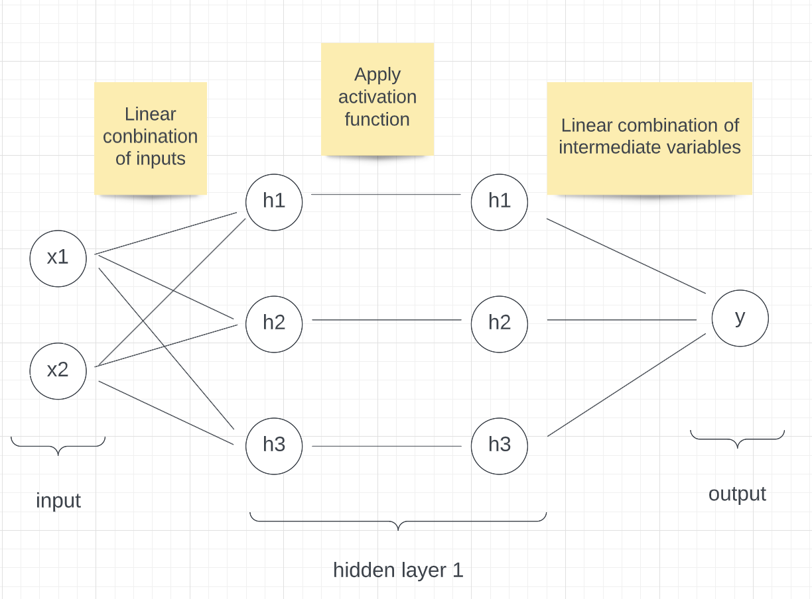
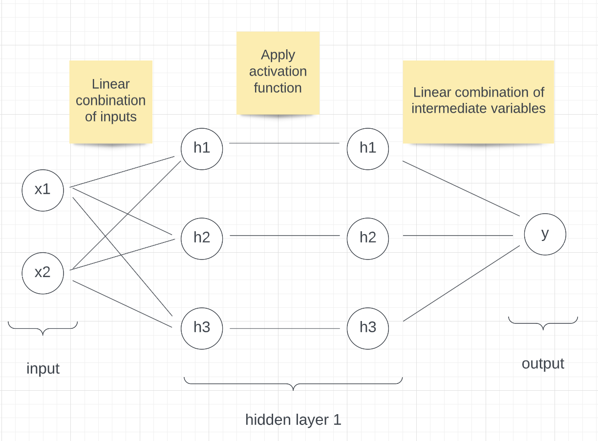

library(knitr)
include_graphics("simple_neural_network.png")
Neural networks are a class of supervised-learning algorithms that can be used both for regression and classification. They are very powerful models that have seen many successful applications such as for language translation or image processing tasks.
For this brief introduction to neural networks, with the help of a toy example, we will start by explaining how they work. We will then show how neural networks are trained. We will finish by discussing neural networks’ drawbacks and their successful application in the field of policy.
As in any supervised-learning problem, say you are interested in predicting a variable y based on some input (x1, x2). Let’s call f the function that maps (x1,x2) to y.
In linear regression, we assume f can be approximated by a function f_hat of the form f_hat(x1,x2) = p1 * x1 + p2 * x2 + p3. We then look for the set of parameters (p1,p2,p3) such that our approximation f_hat is as close as possible to f.
Neural networks are similar, although we assume f_hat takes a slightly different form. We can represent a very simple network visually as follow:
library(knitr)
include_graphics("simple_neural_network.png")
Our function f_hat is a bit more complex. It is not a linear combination of the input. Given some input (x1, x2) to compute the output of f_hat, we first compute a set of intermediate variables h1, h2, h3 that are all linear combinations of x1 and x2. So
h1 = p1_1 * x1 + p1_2 * x2 + p1_3
h2 = p2_1 * x1 + p2_2 * x2 + p2_3
h3 = p3_1 * x1 + p3_2 * x2 + p3_3
for some given parameters pi_j.
We then pass h1, h2, h3 through what we call an activation function. This activation function can be any continuous function, as long as it is non-linear. Here we will use the activation function AF(x) = x if x>0 and AF(x) = 0 otherwise, or AF(x) = max(x, 0).
The output of our neural network, f_hat(x1, x2) or y_hat, is then a linear combination of h1, h2, h3. So
f(x1, x2) = q1 * h1 + q2 * h2 + q3 * h3 + q4
for some given parameters (q1, q2, q3, q4).
As for linear regression, the goal is then to learn the optimal set of parameters (p1_1, p1_2, … , q1, q2, q3, q4) such that our function f_hat is as close as possible to f.
As an example, say our neural network has parameters:
p1 = c(2, 1, 1)
p2 = c(3, 0, 1)
p3 = c(0, 2, 1)
q = c(1, 0, 4, -2)Then for the input:
x = c(2, 1)The output of f_hat is:
x = append(x, 1)
h1 = max(sum(x*p1), 0) # max is the activation function
h2 = max(sum(x*p2), 0)
h3 = max(sum(x*p3), 0)
h = c(h1, h2, h3, 1)
y_hat = sum(h*q)
print(paste('f_hat(2, 1) =', y_hat))[1] "f_hat(2, 1) = 16"This is a very simple network with one hidden layer of size 3: (h1, h2, h3). In practice, neural networks are much bigger and can have hundreds of layers with thousands of variables each.
To show how a neural network can be trained, we will train a neural network on the simplest of datasets, a single data point. Let’s assume that the true function we are trying to learn, f, maps (x1, x2) to some output y.
We will model f using the same neural network as the one described above, that is, a neural network with one hidden layer of size 3.
p1 = c(1,-1,4) # randomly initialized
p2 = c(2,1,-3) # randomly initialized
p3 = c(4,-2,-1) # randomly initialized
q = c(-2,5,3,1) # randomly initialized
forward_pass = function(x) {
x = append(x, 1)
h = c(max(sum(x*p1),0), max(sum(x*p2),0), max(sum(x*p3),0))
h = append(h, 1)
y_hat = sum(h*q)
output = list(h, y_hat)
return(output)
}
x = c(2,1)
y_hat = unlist(forward_pass(x)[2])
print(y_hat)[1] 16For each data point (x1, x2), our neural network predicts an output y_hat. The goal is then to make y_hat as close as possible to y. To measure how “close”, y and y_hat are, we can use the Euclidean distance (y-y_hat)**2.
We then want to learn the set of parameters (p1, p2, p3, q) such that the average Euclidean distance between our predictions y_hat and the true output y is as small as possible. We call that objective minimising the loss function.
loss = function(y_hat, y) {
l = (y_hat - y)**2
return(l)
}
print(loss(3,5))[1] 4In linear regression, we can simply take the derivative of that loss with respect to our parameters and compute an analytic formula for the set of optimal parameters. Unfortunately, this is not possible for neural networks. We thus use an algorithm called gradient descent.
Gradient descent is an iterative algorithm. We start with an initial set of parameters for our neural network. We then take a few data points and compute our predictions. We then compare these predictions to the true outputs and calculate the loss. The loss tells us how well our neural network is performing. We can then use the loss as a signal for the neural network and update the parameters to reduce it. To use the loss to teach the neural network how to improve, we need to compute the derivatives of the loss with respect to the network’s parameters.
d_loss_d_q = function(y, y_hat, h) {
d_loss_d_y_hat_ = 2 * (y_hat - y)
d_y_hat_d_q_ = h
return(d_loss_d_y_hat_ * d_y_hat_d_q_)
}
d_loss_d_h = function(y, y_hat) {
d_loss_d_y_hat_ = 2 * (y_hat - y)
d_y_hat_d_h_ = q
return(d_loss_d_y_hat_ * d_y_hat_d_h_)
}
d_loss_d_h_pre_activation = function(y , y_hat, h) {
d_loss_d_h_ = d_loss_d_h(y, y_hat)
d_h_d_h_pre_activation_ = pmin(pmax(h, 0), 1)
return(d_loss_d_h_ * d_h_d_h_pre_activation_)
}
d_loss_dp1 = function(y , y_hat, h, x) {
d_loss_d_h1_ = d_loss_d_h_pre_activation(y, y_hat, h)[1]
d_h1_dp1_ = append(x, 1)
return(d_loss_d_h1_ * d_h1_dp1_)
}
d_loss_dp2 = function(y , y_hat, h, x) {
d_loss_d_h2_ = d_loss_d_h_pre_activation(y, y_hat, h)[2]
d_h2_dp2_ = append(x, 1)
return(d_loss_d_h2_ * d_h2_dp2_)
}
d_loss_dp3 = function(y , y_hat, h, x) {
d_loss_d_h3_ = d_loss_d_h_pre_activation(y, y_hat, h)[3]
d_h3_dp3_ = append(x, 1)
return(d_loss_d_h3_ * d_h3_dp3_)
}So for the input (1,2), the updates are:
x_example = c(1,2)
# Assuming the function we are trying to learn is f(x1, x2) = x1 * x2 + x2
y_example = 1*2 + 2
# Prediction
output = forward_pass(x_example)
h = unlist(output[1])
y_hat = unlist(output[2])
print('hidden layer')[1] "hidden layer"print(h)[1] 3 1 0 1print('prediction')[1] "prediction"print(y_hat)[1] 0# Loss
l = loss(y_hat, y_example)
print('loss')[1] "loss"print(l)[1] 16# Derivatives
print('derivatives')[1] "derivatives"d_loss_d_q_ = d_loss_d_q(y_example, y_hat, h)
print(d_loss_d_q_)[1] -24 -8 0 -8d_loss_d_p1_ = d_loss_dp1(y_example, y_hat, h, x_example)
print(d_loss_d_p1_)[1] 16 32 16d_loss_d_p2_ = d_loss_dp2(y_example, y_hat, h, x_example)
print(d_loss_d_p2_)[1] -40 -80 -40d_loss_d_p3_ = d_loss_dp3(y_example, y_hat, h, x_example)
print(d_loss_d_p3_)[1] 0 0 0# Updates
step_size = 0.01
q = q - step_size * d_loss_d_q_
p1 = p1 - step_size * d_loss_d_p1_
p2 = p2 - step_size * d_loss_d_p2_
p3 = p3 - step_size * d_loss_d_p3_
print('updated neural network parameters')[1] "updated neural network parameters"print(q)[1] -1.76 5.08 3.00 1.08print(p1)[1] 0.84 -1.32 3.84print(p2)[1] 2.4 1.8 -2.6print(p3)[1] 4 -2 -1If we run this cell multiple times (>10 times), we see the loss decrease. Note that here we are only training the network on a single data point. Usually, we have thousands of data points and so we use all of them during training.
In this project, we do not expand our work to a bigger dataset or apply them to a real-life dataset. The challenge for doing so is:
In the project, we set up the formulas to calculate the hidden layers and outputs by ourselves, but it is difficult to do so when we do not know the relationship between the input and the output.
In the project, we use a feed-forward neural network which only calculates the dataset in one direction. In another word, it does not do the circle or loop in the calculation. However, when we use real-life data, sometimes we should use a Recurrent Neural Network to create a better model.
It is also difficult to find a big dataset that can properly train the neural network model. Also, after finding a dataset, we must examine the bias this dataset has on different subsets.
When we expand the data, it is better to use some packages to help us better build the neural network model. In the work we do above, we do not use the package designed to be used in the building of the neural network model, however, there are a lots of R packages in CRAN which can be used to build the neural network models. In those packages, four packages are often used: “tensorflow”,“keras”,“nnet”, “neuralnet”.
“Keras” allows us to run the experimentation faster. [1] “Tensorflow” enable us to use TensorFlow in r. “Nnet” is often used in feed-forward neural network model which has only one hidden layer [2], while “neuralnet” can be used in a more complex model. Using “neuralnet” package, we can choose the repetition of the training, the algorithm and the activation function we used to train the model etc. Since “neuralnet” can set up a series of different settings in the model and can be used in more kinds of neural network models, it is the most popular package used in R to build the neural network model.
Neural networks have several drawbacks.
When we train the neural network model, we need a lots of data. But getting a large amount of data cost a lot money. Hence, in the area of public policy, we need to evaluate the benefit and the cost of building a neural network model. For complex tasks such as image classification, neural networks requires thousands to millions of data points.
Neural networks are hard to interpret. They are often referred to as black boxes, and it is hard to tell what the neural network has learned. This drawback is more serious in the area of public policy. Because the policy is related to the welfare of the public, it is important that we can explain why we set up a policy for the public, who might not have much computer science background. Simply saying “the algorithm said so” is not enough.
Neural networks also depend on many hyperparameters, such as the step, size, or initial neural network parameter values, and it is not clear how best to initialize them. There exist some rules of thumb, but in practice, training neural networks usually requires trying multiple setups until a good enough one is achieved.
Neural networks consume a large number of computing resources and thus electricity. In a world where we are trying to reduce our carbon footprint, this is not ideal.
Although the neural network has many shortcomings, it has several advantages as well.
Its accuracy is higher than other traditional machine learning models with enough data. Since the model uses several hidden layers, the predictions this model made even include the hidden relationship. Also, the model can optimize the weight of different inputs which can help the model to make a more accurate prediction.
It can measure non-linear\ relationships between the inputs and the output. The model sets several hidden levels to convert the linear relationship to a non-linear relationship and make better predictions.
Because of the advantages neural networks have, neural networks are at the forefront of many ground-breaking advances such as protein structure prediction.
In terms of policy, the neural network model is often used in the area of environment and energy. For energy, It is often used to predict the price and demand of energy which can help policymakers to better understand the market. For the environment, it can be used to evaluate the current policy and help examine the factors which can have an impact on the environment.
In a study performed by Cavalcante, Y.L., R.A. Hauser-Davis, Artificial Neural Networks are used to predict some parameters which can be used as the indicators of the quality of the water, such as PH value and hardness, to measure the difference in the water quality in the different seasons. Knowing the result of the research, the policymaker can make different solutions based on different seasons to improve the water quality of the area. [3] Geem, Zong Woo, and Roper, William E. use a neural network model to estimate the energy demand in South Korea using GDP, population, import amount, and export amount to help the government better set up its energy policy. [4] Koutroumanidis, Theodoros, Ioannou, Konstantinos and Arabatzis, Garyfallos combine the artificial neural network model and ARIMA model to predict the price of fuelwood in Greece to help energy policy maker to better understand the fuelwood market. [5]
In these cases, the neural network model is used to find out the relationship between the inputs and the output, which can be used to better make the policy.
Not only the neural networks model can be used to make the policy, but it can also use to evaluate the policy outcome. Dozic, Damir J., and Branka D. Gvozdenac Urosevic. predict the emission of CO2 in the long term in the EU using the neural network model to evaluate the current energy policy and analyze the relevant indicators which can be changed to get a better outcome. [6]
Combining it into policy-making and using it to predict the outcome of the policy is the main way to use the neural network model in the policy. From our perspective, the neural network model can also be used to analyze the preference of the policy by the public. Bhatt and Meghana A. use the neural network model to predict the spillovers and dilution effect of advertising. [7] We can also use this model to predict the same thing from a policy. By collecting data from social media, and training the neural network by it, we can predict whether people will have positive or negative feelings about a policy.
Although we cannot tell the problem in the current use of neural network model in policy, it does has a potential problem if we expand the use of it in the future: The model might have algorithmic bias.
It is possible that the prediction from the neural network model has bias over some different groups because of the bias in the training dataset. Since the neural network model learns from the training, if there is bias over some variables (for example, gender, race, region), this kind of bias will be learned by the neural network model and the prediction made by it will have bias. Also, the different proportions of some variables in the training data will lead to bias in the predictions too. For example, if in the training data, men are 80%, women are 15%, and non-binary gender is 5%, the model is likely cannot predict well for women and non-binary gender since the low sample size can lead to the problem of under-fitting. Another cause of the bias is that several variables have correlation and this correlation is measured by a variable that is not included in the dataset. Since an important variable that has an impact on the result is neglected, the prediction can be inaccurate. [8]
The effect of algorithmic bias is more serious in policymaking. The bias prediction can lead to overlooking the need of some groups or even lead to a policy that harms these groups. Since policy affects the public, we should be careful when we use the neural network model.
In conclusion, the neural network model is hard to interpret and needs a large number of data to train it, but it is useful when we make and evaluate energy and environment policies.
[1] ‘keras: R Interface to ’Keras’, https://CRAN.R-project.org/package=keras
[2] ‘Package nnet’, 2022, https://cran.r-project.org/web/packages/nnet/nnet.pdf(accessed October 13 2022)
[3] Cavalcante, Y.L., R.A. Hauser-Davis, A.C.F. Saraiva, I.L.S. Brandão, T.F. Oliveira, and A.M. Silveira. “Metal and Physico-Chemical Variations at a Hydroelectric Reservoir Analyzed by Multivariate Analyses and Artificial Neural Networks: Environmental Management and Policy/decision-Making Tools.” The Science of the Total Environment 442 (2013): 509–14. https://doi.org/10.1016/j.scitotenv.2012.10.059.
[4] Geem, Zong Woo, and William E. Roper. “Energy Demand Estimation of South Korea Using Artificial Neural Network.” Energy Policy 37, no. 10 (2009): 4049–54. https://doi.org/10.1016/j.enpol.2009.04.049.
[5] Koutroumanidis, Theodoros, Konstantinos Ioannou, and Garyfallos Arabatzis. “Predicting Fuelwood Prices in Greece with the Use of ARIMA Models, Artificial Neural Networks and a Hybrid ARIMA–ANN Model.” Energy Policy 37, no. 9 (2009): 3627–34. https://doi.org/10.1016/j.enpol.2009.04.024.
[6] Dozic, Damir J., and Branka D. Gvozdenac Urosevic. “Application of Artificial Neural Networks for Testing Long-Term Energy Policy Targets.” Energy (Oxford) 174 (2019): 488–96. https://doi.org/10.1016/j.energy.2019.02.191.
[7] Bhatt, Meghana A. “Evaluation and Associations: A Neural-Network Model of Advertising and Consumer Choice.” Journal of Economic Behavior & Organization 82, no. 1 (2012): 236–55. https://doi.org/10.1016/j.jebo.2012.02.001.
[8] Tackling Algorithmic Bias in Neural-Network Classifiers using Wasserstein-2 Regularization